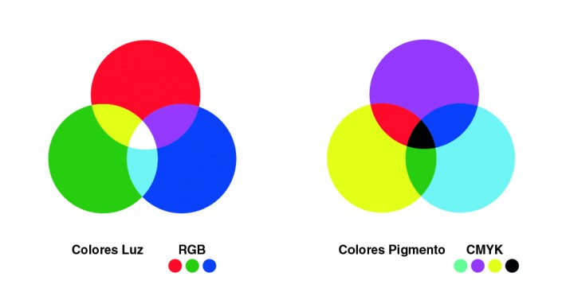

TEORÍA DEL COLOR
En este post te vamos a introducir en el mundo del color. Vamos a darte una guía básica del color y te explicaremos de manera sencilla qué es el color, la Teoría del color y la psicología del color.
Teoría del color: ¿Qué es el color?
El mundo es incoloro. Se podría decir que todo el color que vemos no existe. Es una percepción.Los objetos poseen la característica de absorber determinadas partes del espectro lumínico. La luz que no es absorbida se remite y transmite diferentes estímulos de color al de la ambientación general. Al llegar estos estímulos hasta el órgano de la vista, nos produce una sensación de color.
Se considera que el color se genera de la descomposición de la luz blanca proveniente del sol, o de un foco o fuente luminosa artificial. La apariencia de esos colores siempre es visual, y variará dependiendo del tipo de rayos luminosos, su intensidad o el modo en que son reflejados.
La luz blanca está formada por tres colores básicos: rojo, verde y azul. Este fenómeno fue descubierto por Issac Newton al hacer pasar un rayo de luz blanca por medio de un prisma de cristal, este haz de luz se dividió en un espectro de colores idéntico al del arco iris.
¿Cómo aparecen los colores?
Los colores aparecen a partir de lo que se conocer como los tres colores primarios.
¿Qué son los colores primarios?
El ojo cuenta con tres tipos de células visuales, que rigen tres tipos diferentes de sensaciones, correspondientes a los colores primarios (rojo, verde y azul.). A partir de ellos se forma para cada sensación de color un código de tres partes.
Estos colores no surgen de la mezcla de ningún color, por eso son colores primarios
¿Qué son los colores secundarios?
Los colores secundarios son aquellos que se forman de la mezcla, por partes iguales, de dos primarios (es decir: de la mezcla del azul. y el amarillo surge el verde, del rojo y amarillo, el naranja y del rojo y azul., el violeta). Por su parte, los colores terciarios se forman con la mezcla, por partes iguales, de un color primario con uno secundario adyacente. Así, de esta combinación resulta el rojo violáceo, rojo anaranjado, amarillo anaranjado, amarillo verdoso, azul verdoso y azul violáceo.
El círculo cromático

Psicología del color
Dentro de la teoría del color podemos hablar sobre la psicología del color, de la que existen diferentes teorías. Algunas de ellas se contradicen entre sí, ya que dependiendo de nuestra cultura, el color nos puede transmitir sensaciones completamente diferentes.
Dependiendo de nuestra experiencia personal y del lugar en que vivimos, los colores y los elementos que nos rodean, nos pueden transmitir sensaciones, gustos o estados de ánimo.
Por esta razón cuando elegimos colores para nuestros diseños, material comercial o negocios es bueno tener claro qué puede transmitir ese color, en ese lugar y a la gente que esté en él.
El significado de los colores
¿Por qué tienen significado los colores?
Antes de hablar del significado de los colores debemos conocer algunas de las características de éstos, tales como el tono, la saturación y la brillantez.
- ¿Qué es el tono de un color?
El tono es el color en sí mismo, es la cualidad que define la mezcla de un color con el blanco o con el negro. Así podemos decir que existen tonos cálidos o tonos fríos. Los cálidos son aquellos tales como el rojo, el amarillo y los naranjas, mientras que los fríos son el azul. y el verde. El verde si tiene más cyan. que amarillo, tendría una tendencia a ser frío, y si tiene más amarillo parecería ser más cálido. Por eso es importante saber manejar los tonos.